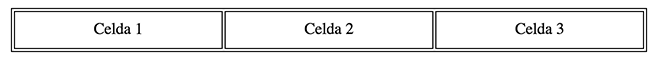

Características del elemento table
- Una tabla está formada por una sucesión de celdas dispuestas de forma ordenada en filas y columnas.
- Su función principal es la de tabular datos de forma sencilla.
Renderizado
El código del ejemplo anterior tendría la siguiente estructura:

Elementos de una tabla
- TABLE - Define las características genéricas de la tabla. (borde, ancho, etc)
- THEAD - Aportamos semántica al encabezado de la tabla.
- TBODY - Define el contenido principal de la tabla.
- TFOOT - Aportamos semántica al pie de la tabla.
- TR - Contenedor de celdas que definen una fila.
- TH - Celdas contenidas dentro de un THEAD.
- TD - Celdas contenidas dentro de un TBODY.
- CAPTION - Elemento designado para aportar una descripción semántica a la tabla.
Formateado CSS
- Por defecto una tabla ocupa sólo el espacio mínimo de los elementos que contiene
- Tiene su propio tipo de display:table
ejemplo table
Anidación
Las tablas pueden ser anidadas las unas dentro de las otras para representar estructuras de datos más complejas.
ejemplo anidación
Atributo colspan
Una celda puede ser "extendida" en columnas mediante el atributo colspan. De esta forma podemos combinarlas según nos interese.
Celda 1 extendida en 2 columnas
| Celda 1 |
Celda 3 |
ejemplo colspan
Atributo rowspan
De la misma manera, una celda también puede ser "extendida" en filas mediante rowspan.
Celda 1 extendida en 2 filas
| Celda 1 |
Celda 2 |
| Celda 4 |
ejemplo rowspan